kargui 開発レポート ・ 第 2 章
0.1 から 0.2 へ、部品をそろえた順番
0.1 の kargui には、ボタン・チェック・入力欄・一覧など、タスク帳を作るのに要る部品しかありませんでした。ドロップダウンもメニューもありません。この章では、足す部品をどう選び、どの順で作ったかを書きます。結論を先に書くと、ほかの部品が使う「土台」を先に作ったことで、後の部品は 1 組 15 分前後で足せました。
この章で分かること
- 足す部品を、13 のフレームワークが持っているかどうかで決めた方法
- 「できた」と言える部品の基準（6 項目）
- 土台を先に作ると、後の部品が速く進む理由
- 0.1 と 0.2 の大きさの違い（行数・試験・API の数）
足す部品の選び方
デスクトップの GUI フレームワーク 13 個について、持っている部品と仕組みを調べました。13 個のうち 7 割以上が持つ物を「1 群」と呼び、ふつうのアプリに要る物とみなしました。ラジオボタン・メニュー・タブ・木の表示・表・日付の選択・複数の窓・ファイルのダイアログなどが入ります。
動きと読み上げの手本には、次の組を使いました。見た目は kargui のままにし、キーボードの操作と読み上げは Windows の作法に合わせています。
| 手本 | 何を学んだか |
|---|---|
| WinUI 3 | 部品の変種と選択肢、Windows のキー操作（WinUI と食い違う時は WinUI に合わせる） |
| Qt | 部品の変種と選択肢（WinUI と Qt の両方にある物は必ず作る） |
| Dear ImGui と egui | 即時モードでの書き方（押せない範囲、引っ張る荷物など） |
| APG と UI オートメーション | 部品ごとのキー操作と、読み上げソフトに出す役割と項目 |
「できた」と言える基準
部品の数だけを増やすと、キーボードで使えない部品や、読み上げソフトが黙る部品が増えます。そこで、1 つの部品は次の 6 項目を満たしたら「できた」とすることにしました。
| 項目 | 中身 |
|---|---|
| 1. 変種 | WinUI 3 と Qt の両方にある変種と選択肢は、全部作る |
| 2. 状態 | ふつう・乗る・押す・焦点・押せない（と、選んだ・確かめた）を、明るい方と暗い方で描く |
| 3. キー操作 | APG のその部品の型のキー操作を全部満たす |
| 4. 読み上げ | UI オートメーションのその部品の種類で必須の操作と項目を出す |
| 5. 日本語入力 | 文字を打つ部品は、入力欄と同じ 5 項目を満たす |
| 6. 説明・試験・軽さ | 動く例、試験台の試験、写真、ガイドの節。1,000 個並べても軽さを保つ |
土台から作る
メニュー・ドロップダウン・日付の選択・ツールチップ・ダイアログは、どれも「ほかの部品の上に重ねて出す」物です。重ねる物の外を押したら閉じる、Esc で閉じる、焦点を中に閉じ込める、閉じたら元の部品へ焦点を戻す、といった決まりは共通です。これを部品ごとに書くと、同じ決まりを 5 回書き、5 回間違えます。
そこで、1 群の部品より先に、次の 5 つの「土台」を作りました。
- 押せない状態（
ui.enabled(false, ..)）: どの部品にも効く - 重ねて出す層（浮き出し・ダイアログ・ツールチップ）: 閉じる・焦点の決まりを 1 か所に書く
- アプリのキー・タイマー・スレッド: ショートカット、決めた時刻に起きる、ほかのスレッドから描き直す
- アイコンと画像: kargui が自分で描く 18 個のアイコンと、画像のファイル
- 複数行の文字: 複数行の入力欄と、折り返す文字の位置の計算
commit の時刻の差なので、作る時間のほかに、試験・測定・写真・ガイドを書く時間を含みます。作業を止めていた時間（押せない状態の前）も含みます。
メニュー（37 分）が目立って長いのは、キー操作の決まりが多いからです。矢印・Home・End・文字で飛ぶ・入れ子のメニューへの出入り・メニューバーの隣へ移る・F10 など、WAI-ARIA のメニューの型を全部満たしました。一方、ドロップダウン（7 分）は重ねて出す層の上に一覧を置くだけで済みました。タブ・数の入力・ツールバー（C 組）や、格子・仕切り・自由に描く面（D 組）も 15 分以内です。
重ねて出す層を先に作ったので、ドロップダウン・メニュー・日付の選択・ツールチップ・ダイアログは、閉じる・焦点を戻す決まりを部品ごとに書かずに済みました。決まりを直す時も、直す場所は重ねて出す層の 1 か所です。
そろった部品
0.2 で足した部品の一部です。どの写真も試験台で描いた物で、本物の窓と同じ CPU の道で描いています。明るい方と暗い方は、読んでいる環境の設定に合わせて切り替わります。
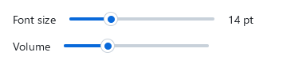
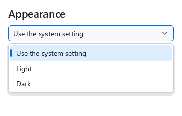
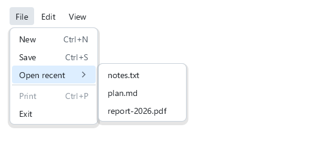
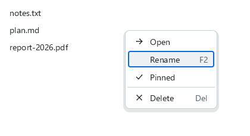
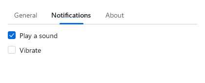
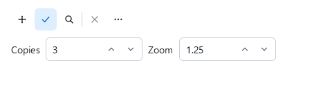
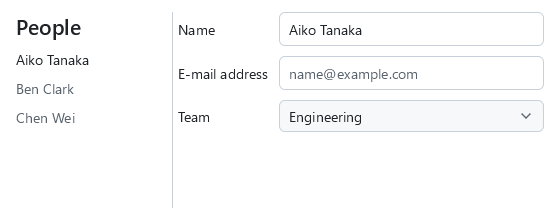
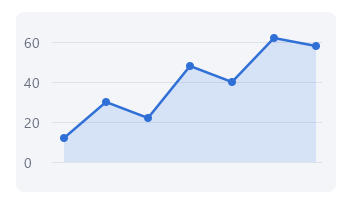
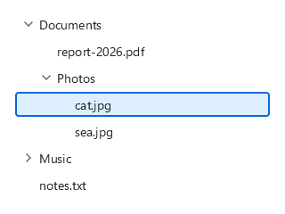
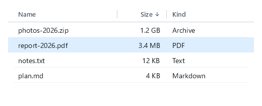
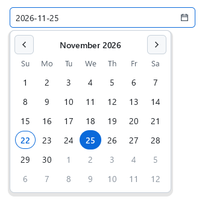
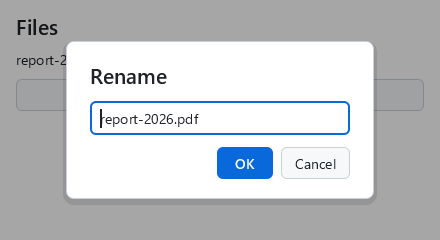
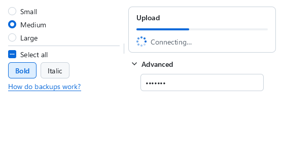
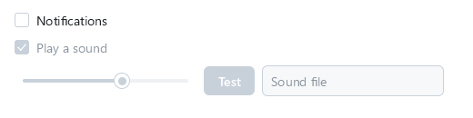
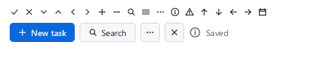
数で見る 0.1 と 0.2
コードの行数は 2 倍を超えました。公開の API（型・関数・欄など）の数も 2 倍を超えています。それに合わせて、試験・ガイド・写真も増やしています。API が変わったのに説明を直していないと検査で落ちる仕組みは、0.1 から使っています。
部品ごとに Button・Slider・Tabs といった型があります。どの型にも .width()・.tooltip()・.context_menu()・.drag_source() が同じ名前で付くように、マクロ（common!）で 1 か所から付けています。部品ごとに手で書くと、付け忘れた部品だけ使えない、という差が出ます。